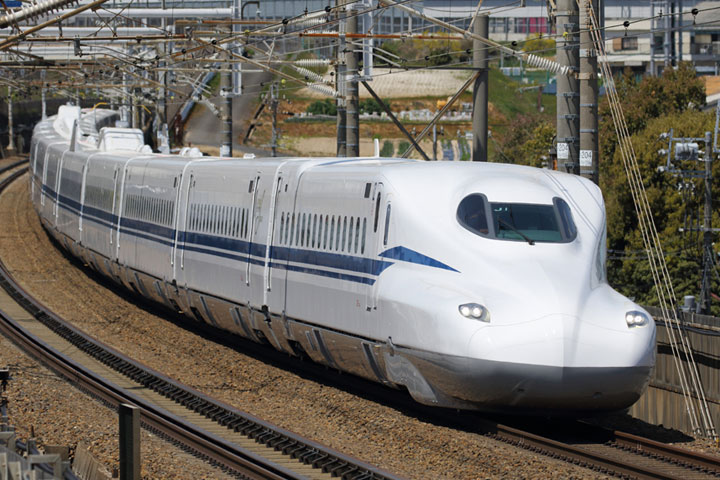
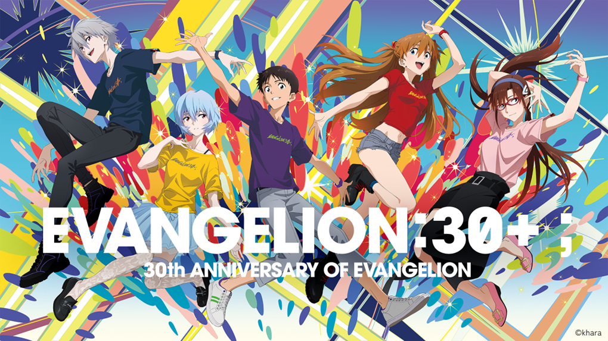
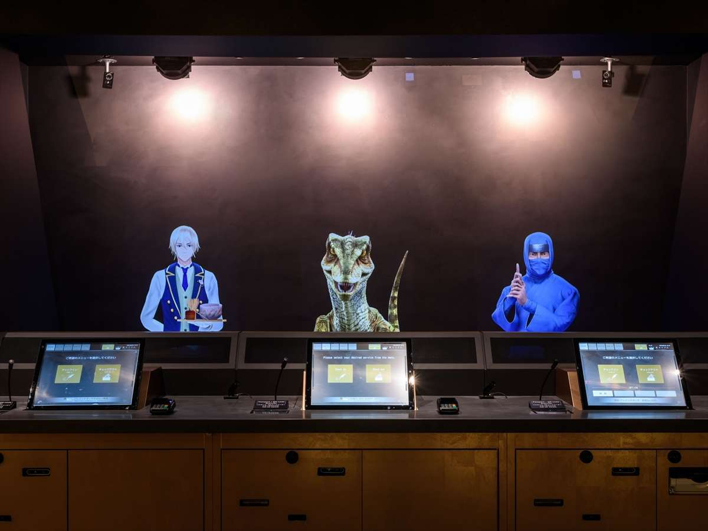
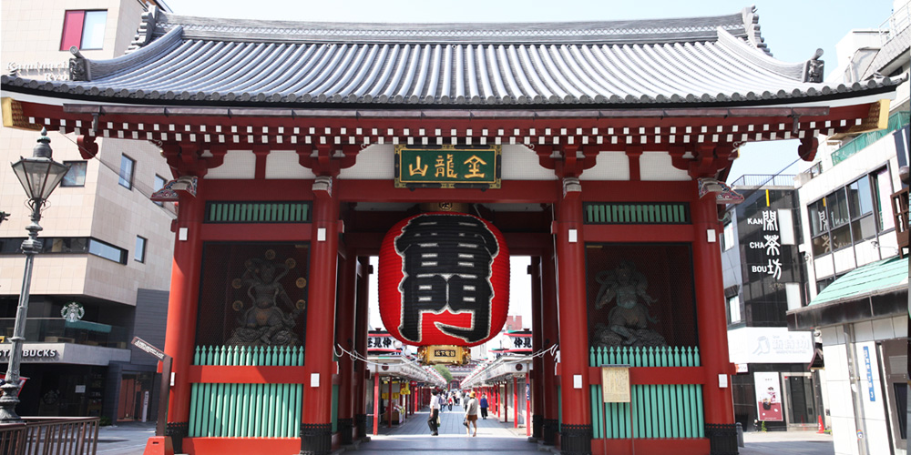
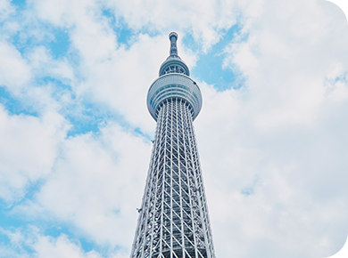
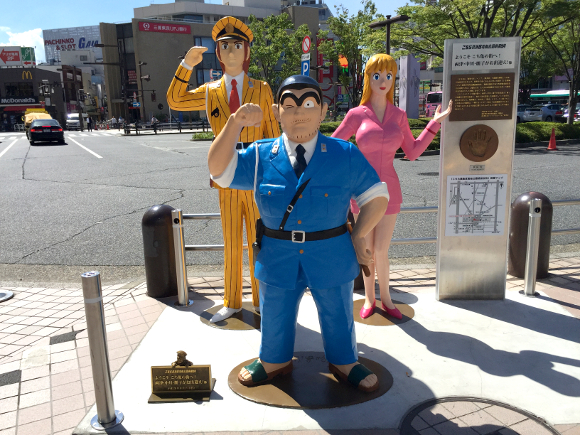
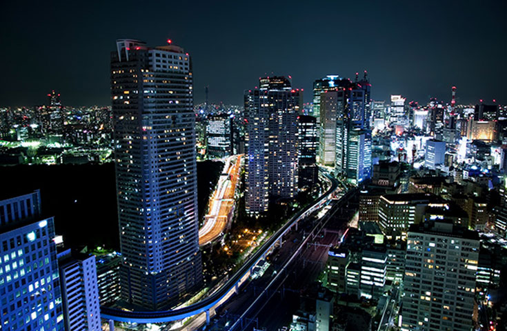
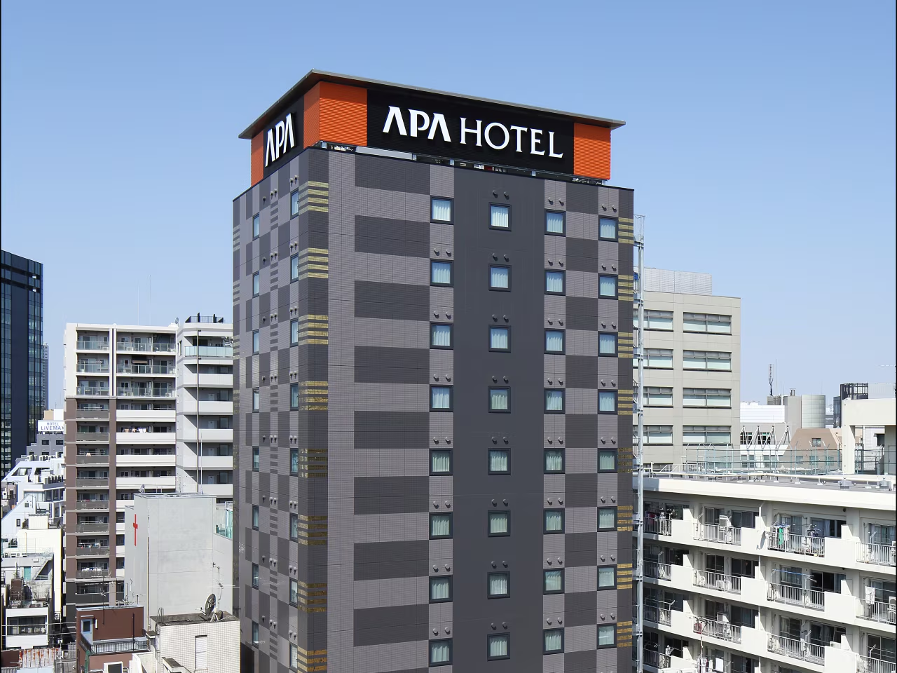
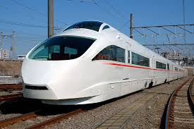

NOW
読み込み中...
2026.02.21 – 02.23
東京旅行計画
大阪発 → 東京・横浜・箱根 2泊3日の旅
DAY 1
2/21（土）大阪 → 東京 → 横浜
09:55 → 10:50
長尾駅 → 京都駅
長尾駅に集合して京都駅まで乗り継ぎ
09:55
長尾（大阪府）
JR
学研都市線快速 同志社前行（3駅）
¥200
10:07
京田辺
着
徒歩
新田辺駅まで 12分
10:24
新田辺
発
近鉄
京都線急行 京都行（6駅）
¥490
10:50
京都
着
🚃 電車移動
合計 ¥690
長尾駅
京田辺駅
新田辺駅

11:10 → 14:29
京都駅 → 新横浜駅
こだま720号で新横浜へ
8号車 13番 C・D席
東京行きの切符を購入したが、会場が新横浜のため途中下車（前途無効）。チケットを取り直すよりもこちらの方が安い。
🚅 新幹線
京都駅
新横浜駅

15:40 集合
EVANGELION:30+;
30th ANNIVERSARY OF EVANGELION
〒222-0033 神奈川県横浜市港北区新横浜3-10
集合時刻：
15:40〜15:55
🎬 イベント
会場
エヴァ後 → 約40分
新横浜 → コスモクロック21
横浜線 or ブルーラインで桜木町駅まで移動
🚃 電車移動
桜木町駅
夜
コスモクロック21
よこはまコスモワールドの大観覧車
最終受付：
20:45
エヴァ特別演出：
18:00〜21:31
毎時 00分・30分（1回あたり1分間）
最終点灯 21:30〜
🎡 遊ぶ
コスモクロック21
横浜観光後 → 約50分
ホテルへ移動
横浜から浅草方面へ
横浜
横浜駅
JR
上野東京ライン
上野
上野駅
乗り換え
銀座線
東京メトロ銀座線
田原町
田原町駅
着 → ホテルへ
🚃 移動 約50分
横浜駅
上野駅
田原町駅

23:00
チェックイン
HOTEL
変なホテルプレミア 東京 浅草田原町
Google Map
DAY 2
2/22（日）東京観光
起床後
ひろちゃんと合流
2日目スタート！
👋 合流

合流後
少し浅草観光
有名な観光地を感じよう！
🚶 お散歩
12:00
昼ごはん
みんなでランチ
🍽 グルメ
13:00
スカイツリーへ移動
徒歩で向かう
🚶 徒歩

14:00 → 17:00
ソラマチ・スカイツリー
3時間くらい散策。晩ごはん食べるかも
🗼 観光
ソラマチ
スカイツリー

17:00 〜
こち亀エリアへ？
亀有方面に移動して聖地巡礼の可能性
📸 散策
亀有駅

夜
首都高ドライブ
夜景を楽しみながらドライブ
🚗 ドライブ

夜
チェックイン
HOTEL
アパホテル 上野稲荷町
Google Map
DAY 3
2/23（月）箱根・小田原

午前
小田急ロマンスカーで箱根へ
上野方面から新宿経由でロマンスカーに乗車
🚃 ロマンスカー
新宿駅
箱根湯本
終日
箱根・小田原 エヴァ聖地巡礼
エヴァンゲリオンの舞台となった箱根・第3新東京市を巡る
⛩ 聖地巡礼
MODEL COURSE
箱根湯本
箱根登山鉄道 →
強羅
6
ケーブルカー →
早雲山
ロープウェイ →
大涌谷
2
ロープウェイ →
桃源台
7
芦ノ湖海賊船 →
元箱根
4
→
箱根神社
5
箱根登山バス →
桃源台
3
箱根登山バス →
箱根湯本
※ 一部 車でしか難しいコースも含まれます
参照：
小田原・箱根に行かなきゃダメだ…！！【エヴァンゲリオン×箱根】聖地巡礼 観光の旅
箱根
小田原駅
夕方〜
帰路
楽しい旅の思い出を胸に大阪へ帰還
🚅 帰り